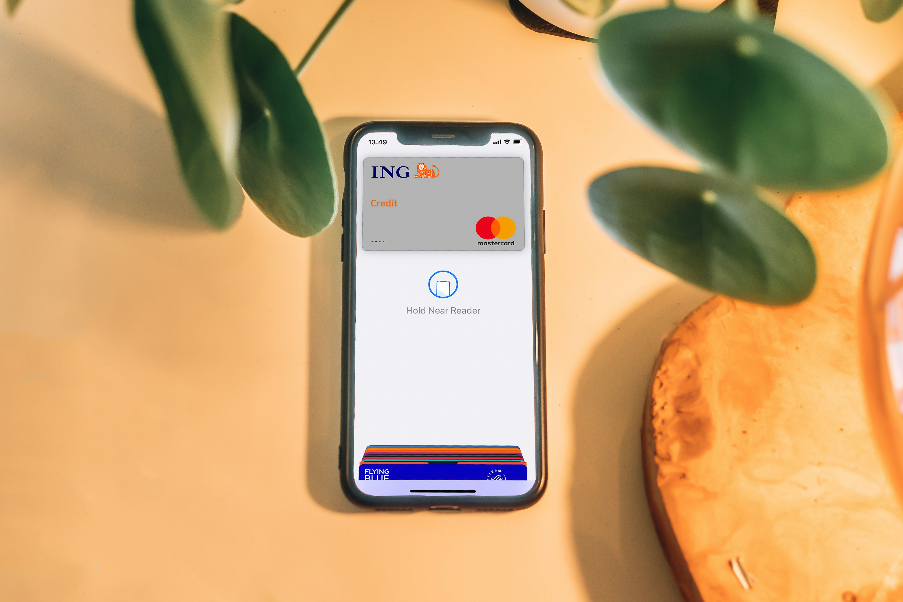
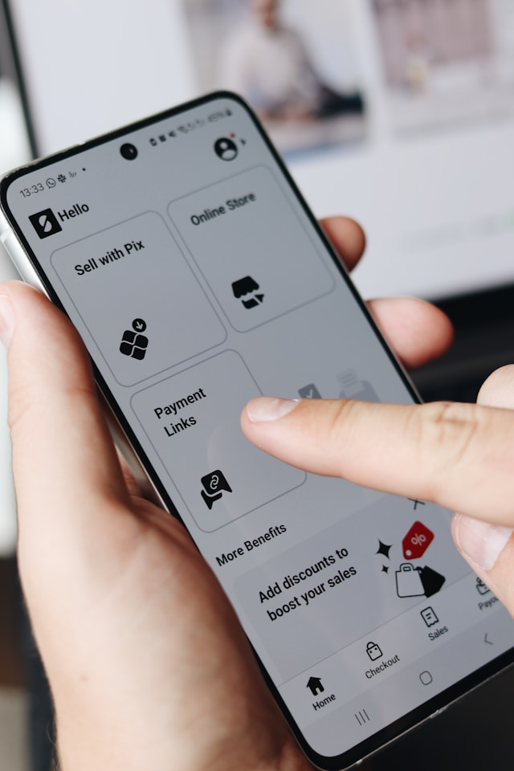
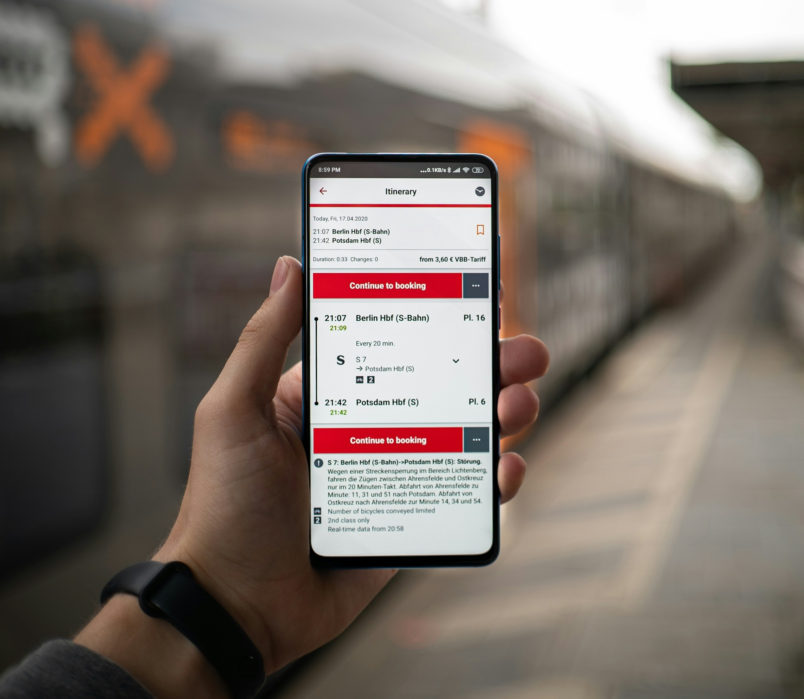

MANUAL

With detailed manual testing on this banking demo site, I evaluated its functionalities and user interactions—uncover the project to see how I validated its performance!
SELENIUM

In just seven days, I crafted and tested essential banking functionalities using Selenium in Eclipse, focusing on a seamless login experience while documenting all test cases, bug reports, and changes to ensure top-notch quality assurance—explore the project to see the technology stack in action!
SELENIUM

I automated testing for an open-source e-commerce website, streamlining processes like product sorting, price verification, error handling, account management, PDF generation, discount validation, and CSV order exports—leveraging Eclipse to enhance both efficiency and my automation skills.
API

I harnessed the Restful Booker API to create a dynamic booking management application in Postman, documenting requests and implementing test cases for token validation and data integrity—showcasing reliable and powerful API integration!
API

I used Postman to validate APIs on a student database through CRUD operations, ensuring accurate status codes and data by writing tests for each task. I ultimately passed all tests, showcasing my skills in API testing and response validation—check out the project to see the flawless performance!
API

I dove into the essentials of endpoint testing in Postman. Leveraging a provided Postman collection, I crafted and executed tests for a server's endpoints, enhancing my skills and ensuring robust functionality.
API

I explored API fundamentals using Postman, mastering the request-response pattern while retrieving books from a Library API, managing queries and variables, implementing authorization, and ultimately earning my Postman Student Expert badge—check it out to see my hands-on experience in action!
SQL

I completed a series of MySQL exercises divided into nine parts, ranging from simple to complex queries. I worked with the Employee and Reward tables to reinforce my SQL skills through practical applications. This structured approach allowed me to build a solid understanding of MySQL fundamentals and gradually tackle more advanced techniques.